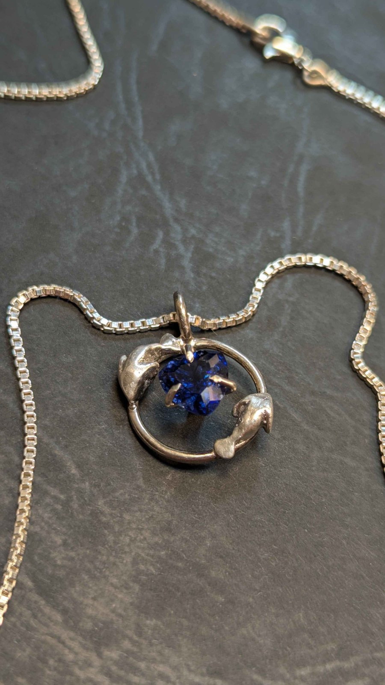
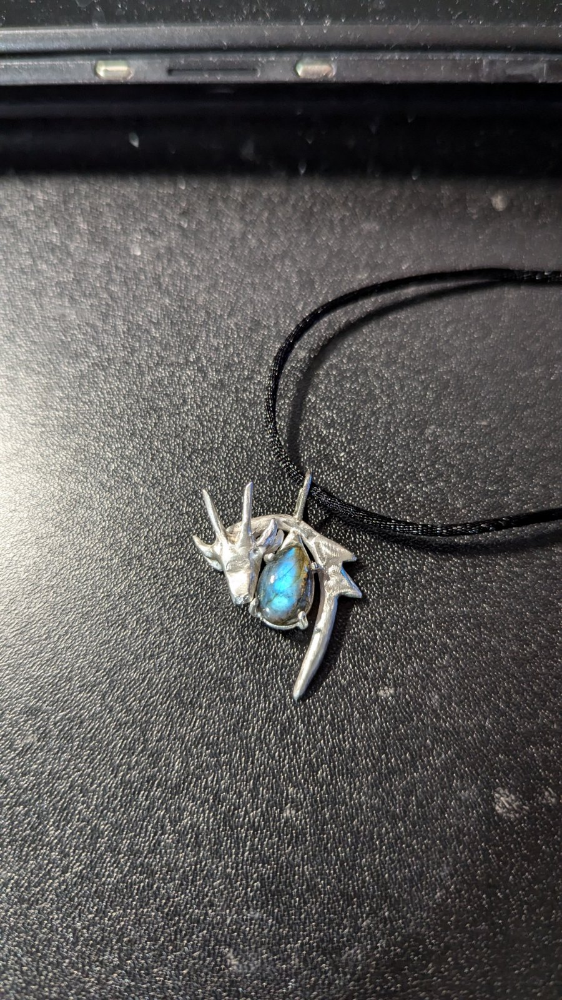
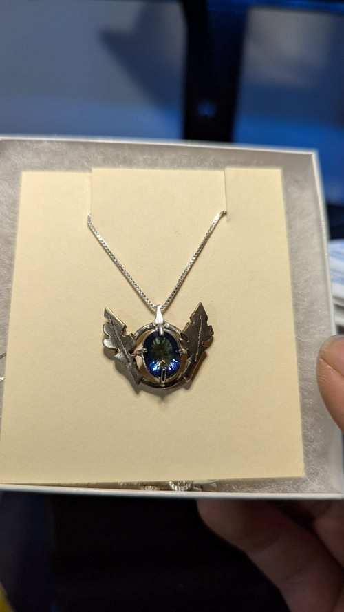
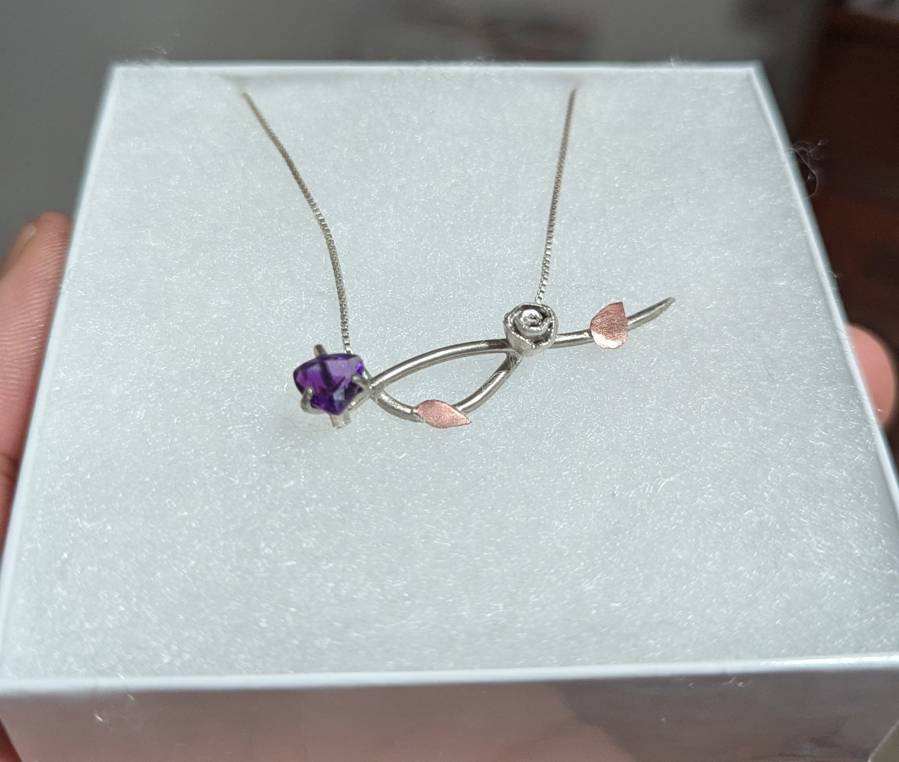
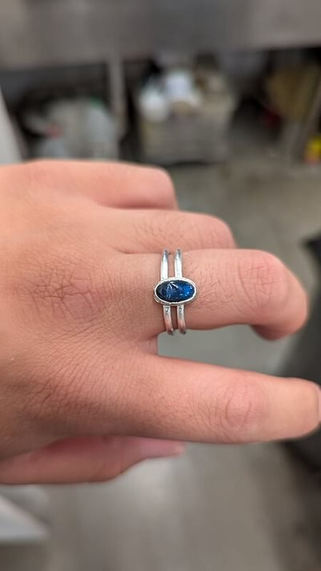
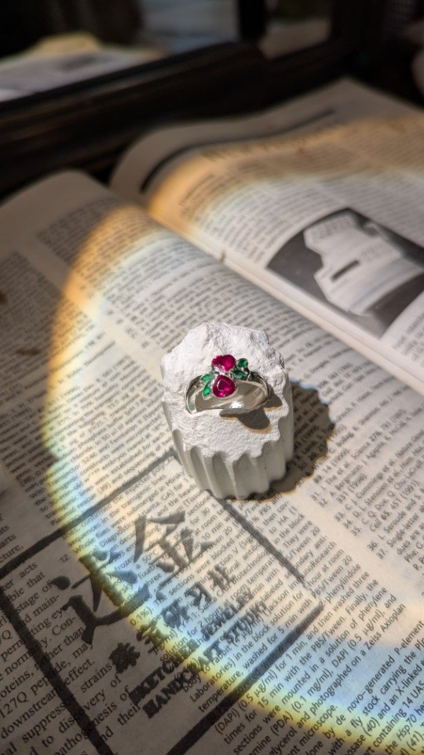
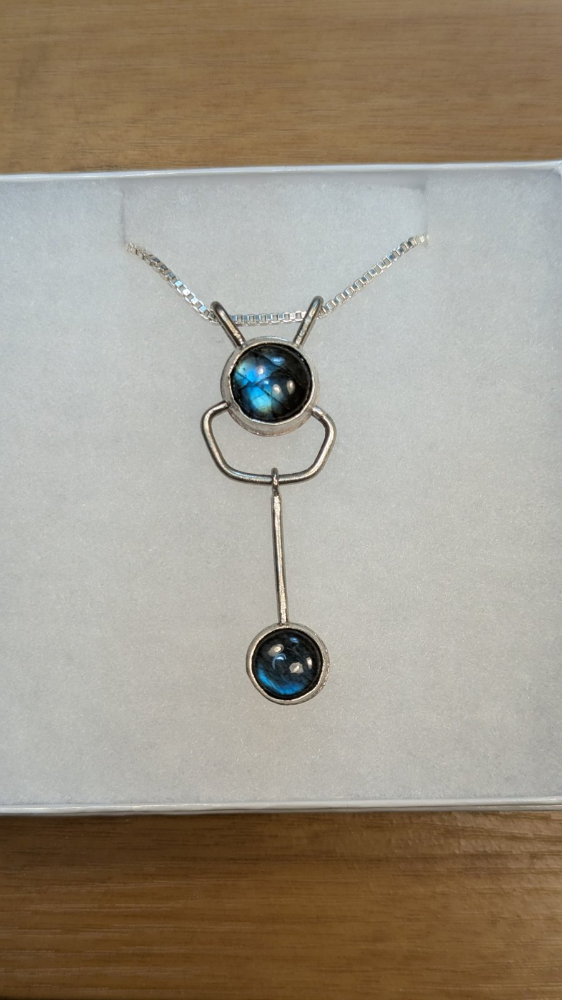
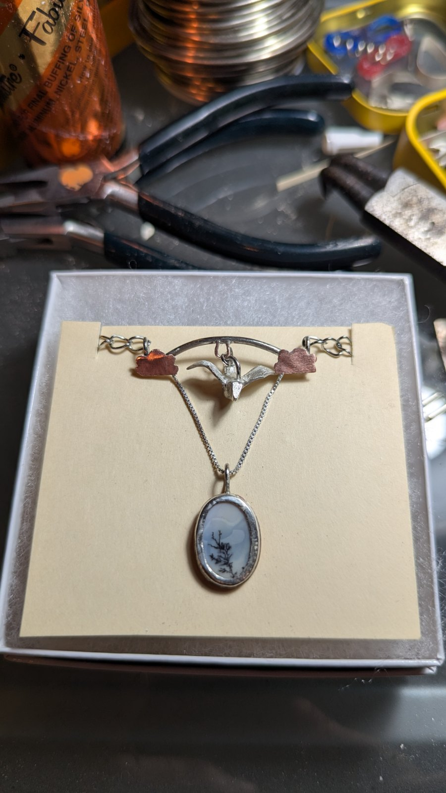
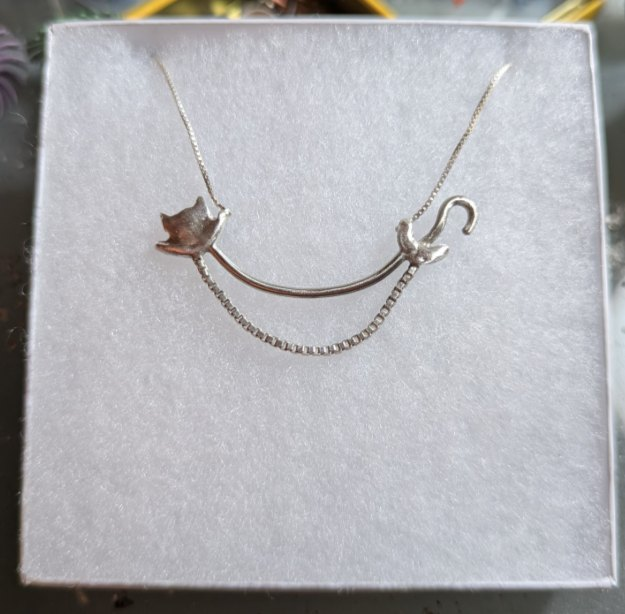
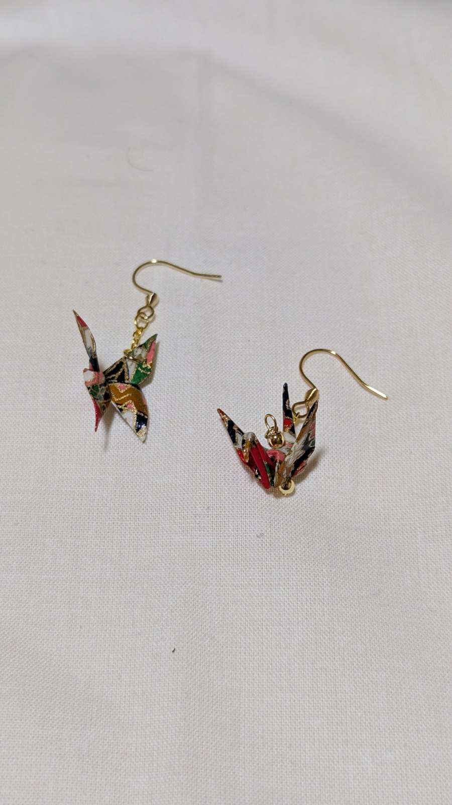

i. Jewelry & Metalsmithing
Sterling silver, designed and fabricated from sketch to finished piece.
Bezel and prong setting, mixed-metal construction, and sculptural casting — with labradorite, dendritic opal, amethyst, mystic topaz, ruby, and emerald as recurring stones.









